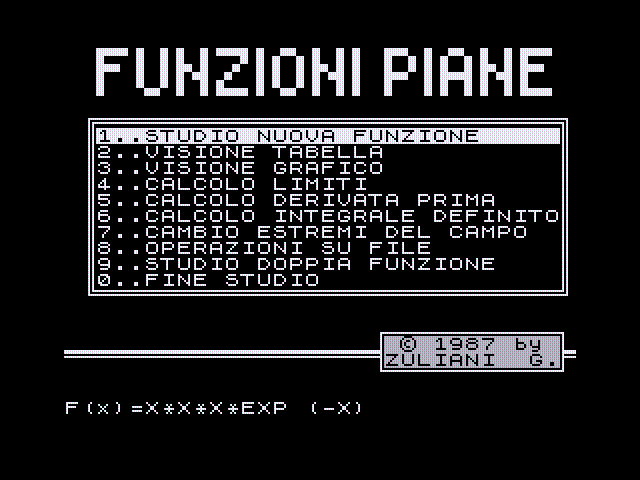
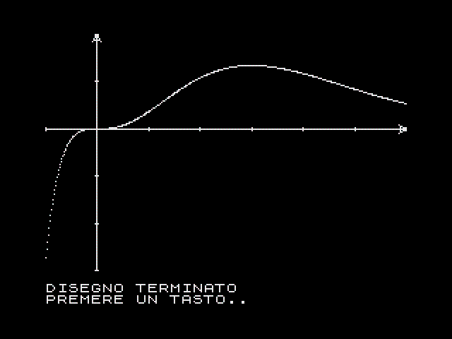

risorse | zx spectrum | funzioni
Classico programma per lo studio di funzioni.
Il programma, originariamente nato su un 48K, è stato successivamente adattato per il 128K (modello +2A) che nel frattempo aveva sostituito il mio Spectrum originale. Sfruttando il RAM Disk, la nuova versione permette di disegnare più tracce sullo stesso grafico.
 
Scarica il nastro virtuale funzioni.tzx (24KB).
10 REM ** FUNZIONI PIANE **
20 FOR f=USR "A" TO USR "A"+15: READ A: POKE F,A: NEXT F: DATA 0,54,73,73,73,73,54,0,0,0,8,4,126,4,8,0
30 DIM H$(8,20): DIM M$(8,20): LET FUN=0: LET GRAF=0: LET F$=""
40 PAPER 0: BORDER 0: INK 7: BRIGHT 1: FLASH 0: OVER 0: INVERSE 0: CLS : POKE 23624,71: POKE 23658,8: POKE 23692,255
50 GO SUB 3460
60 LET A=1
70 PRINT AT A+4+(10 AND A=0),2; OVER 1; INVERSE 1;" "
80 PAUSE 0: LET A$=INKEY$: IF CODE A$=13 THEN GO TO 120
90 IF (CODE A$=11 AND A>1) OR (CODE A$=10 AND A<10) THEN PRINT AT A+4+(10 AND A=0),2; OVER 1; ; INVERSE 1;" ": LET A=A+(CODE A$=10)-(CODE A$=11): GO TO 70
100 IF CODE A$<58 AND CODE A$>47 THEN PRINT AT A+4+(10 AND A=0),2; OVER 1; INVERSE 1;" ": LET A=CODE A$-48: GO TO 70
110 GO TO 80
120 IF (A=2 OR A=3 OR A=4 OR A=5 OR A=6 OR A=7) AND FUN THEN GO TO 170
130 IF A=8 OR (A=9 AND GRAF) THEN GO TO 170
140 IF A=1 THEN GO TO 170
150 IF A=0 THEN STOP
160 PRINT #0;AT 0,0;"*ERRORE* -"+("FILE" AND (A=9))+("FUNZIONE" AND A<>8 AND A<>9)+" INESISTENTE-": PAUSE 50: PRINT #0;AT 0,0,,: GO TO 80
170 CLS : IF A=1 THEN GO SUB 280: GO TO 40
180 IF A=2 THEN GO SUB 1280: GO TO 40
190 IF A=3 THEN GO SUB 620: GO TO 40
200 IF A=4 THEN GO SUB 2360: GO TO 40
210 IF A=5 THEN GO SUB 1440: GO TO 40
220 IF A=6 THEN GO SUB 2830: GO TO 40
230 IF A=7 THEN GO SUB 2660: GO TO 40
240 IF A=8 THEN GO SUB 1660: GO TO 40
250 IF A=9 THEN GO SUB 3680: GO TO 40
260 :
270 :
280 REM ** NUOVA FUNZIONE **
290 :
300 :
310 CLS : PRINT AT 0,0; INVERSE 1;"NUOVA FUNZIONE"
320 PRINT ''"IMMISSIONE DATI:": PRINT "----------------"''
330 LET X$=F$: GO SUB 3180: IF F$="" THEN LET F$=X$: RETURN
340 LET FUN=1: PRINT AT 10,0,,,,,,AT 9,0;
350 INPUT "ESTREMO INFERIORE:";XINF
360 INPUT "ESTREMO SUPERIORE:";XSUP
370 IF XSUP<=XINF THEN PRINT #0;AT 0,0;"*ERRORE* -ESTREMI ILLECITI-": PAUSE 50: PRINT #0;AT 0,0,,: GO TO 350
380 PRINT "ESTREMO INFERIORE:";XINF''
390 PRINT "ESTREMO SUPERIORE:";XSUP: LET SX=(XSUP-XINF)/255
400 INPUT "IL MASSIMO E IL MINIMO ASSOLUTI SONO NOTI [S/N]:";LINE A$: IF A$="N" OR A$="n" THEN GO TO 450
410 IF A$<>"S" AND A$<>"s" THEN GO TO 400
420 INPUT "MINIMO:";MIN: INPUT "MASSIMO:";MAX: IF MAX<=MIN THEN PRINT #0;AT 0,0;"*ERRORE* -ESTREMI ILLECITI-": PAUSE 50: PRINT #0;AT 0,0,,: GO TO 420
430 PRINT ''"MASSIMO DELLA F(X):";MAX''"MINIMO DELLA F(X):";MIN: PRINT #0;AT 1,0;"PREMERE UN TASTO..": PAUSE 0
440 LET Z$="NESSUNO": LET I$="NON NOTA": LET S$=I$: GO TO 570
450 INPUT "PRECISIONE [1..4]:";PR: LET Z=2^(PR+7): LET Z$=STR$ Z: IF Z<256 OR Z>2048 THEN PRINT #0;AT 0,0;"*ERRORE* -"+("TROPPE" AND Z>2048)+("POCHE" AND Z<256)+" SCANSIONI-": PAUSE 50: PRINT #0;AT 0,0,,: GO TO 450
460 PRINT AT 15,10; FLASH 1;"ELABORAZIONE"
470 LET MIN=1E38: LET MAX=-MIN: LET SPX=SX*255/Z: LET N=0
480 PRINT AT 18,0;"NUMERO DI SCANSIONI :";Z
490 FOR X=XINF TO XSUP STEP SPX
500 LET Y=VAL F$
510 IF Y>MAX THEN LET MAX=Y: LET XMAX=X
520 IF Y<MIN THEN LET MIN=Y: LET XMIN=X
530 IF Y>1E3 OR Y<-1E3 THEN PRINT FLASH 1;AT 15,10;" LA FUNZIONE ";AT 16,10;"E' DISCONTINUA": PRINT AT 18,0,,,,;AT 19,3;"Lim F(X)=";("+" AND Y>1E3);("-" AND Y<-1E3);CHR$ 144;AT 20,4;"x";CHR$ 145;INT (X+0.5): PAUSE 0: RETURN
540 PRINT AT 19,0;"SCANSIONI DA ESEGUIRE:";Z-N,: LET N=N+1
550 NEXT X: PRINT AT 19,22;0,: IF MAX=MIN THEN PRINT #0;"*ERRORE* -SCALA INDETERMINABILE-": PAUSE 50: PRINT #0;AT 0,0,,: LET FUN=0: CLS : RETURN
560 PRINT AT 15,10; INVERSE 1;"ELABORAZIONE";AT 16,10;" ESEGUITA ": LET I$=STR$ XMIN: LET S$=STR$ XMAX
570 LET XINFA=INT XINF: LET XSUPA=INT XSUP+(INT XSUP<>XSUP): LET MINA=INT MIN: LET MAXA=INT MAX+(INT MAX<>MAX)
580 PRINT #0;AT 1,0;"VISIONE DEL GRAFICO [S/N]:": PAUSE 0: LET W$=INKEY$: IF W$="N" OR W$="n" THEN CLS : RETURN
590 IF W$<>"S" AND W$<>"s" THEN GO TO 570
600 :
610 :
620 REM ** GRAFICO **
630 :
640 :
650 CLS : PRINT INVERSE 1;"VISIONE GRAFICO"'' INVERSE 0;"F(X)=";F$: LET PASSOX=1E3: LET PASSOY=1E3
660 PRINT #0;AT 0,0;"TRACCIATURA ASSI [S/N]:": PAUSE 0: LET W$=INKEY$: IF W$="N" OR W$="n" THEN LET ASSI=0: GO TO 820
670 IF CODE W$=13 THEN RETURN
680 IF W$<>"S" AND W$<>"s" THEN GO TO 660
690 LET ASSI=1: FOR F=0 TO 10: NEXT F
700 PRINT #0;AT 0,0;"TACCHE SULL'ASSE X [S/N]"
710 LET A$=INKEY$: IF A$="" THEN GO TO 710
720 IF A$="N" OR A$="n" THEN GO TO 760
730 IF A$<>"S" AND A$<>"s" THEN GO TO 710
740 LET BANDAX=XSUPA-XINFA: LET PASSOX=0.01+0.09*(BANDAX>0.3)+0.9*(BANDAX>3)+9*(BANDAX>30)+90*(BANDAX>300)
750 PRINT '"ASSE X: UNA TACCA OGNI ";PASSOX
760 PAUSE 20: PRINT #0;AT 0,0;"TACCHE SULL'ASSE Y [S/N]"
770 LET A$=INKEY$: IF A$="" THEN GO TO 770
780 IF A$="N" OR A$="n" THEN GO TO 820
790 IF A$<>"S" AND A$<>"s" THEN GO TO 770
800 LET BANDAY=MAXA-MINA: LET PASSOY=0.01+0.09*(BANDAY>0.3)+0.9*(BANDAY>3)+9*(BANDAY>30)+90*(BANDAY>300)
810 PRINT '"ASSE Y: UNA TACCA OGNI ";PASSOY
820 PRINT ''"TRACCIATURA ASSI:"; INVERSE 1;(" SI " AND ASSI)+(" NO " AND NOT ASSI)
830 INPUT "DEFINIZIONE GRAFICA [1..10]:";DEF: IF DEF<1 OR DEF >10 THEN PRINT #0;AT 0,0;"*ERRORE* -DEFINIZIONE ILLECITA-": PAUSE 50: PRINT #0;AT 0,0,,: GO TO 830
840 PRINT '"DEFINIZIONE GRAFICA:";DEF
850 INPUT "PUNTI O LINEA CONTINUA [P/L]:";LINE R$: IF R$<>"L" AND R$<>"P" THEN GO TO 850
860 PRINT '"DISEGNO:";: IF R$="P" THEN PRINT INVERSE 1;"PER PUNTI": GO TO 880
870 PRINT INVERSE 1;"LINEA CONTINUA"
880 PRINT #0;AT 0,0;"TUTTO A POSTO [S/N]"
890 LET A$=INKEY$: IF A$="" OR (A$<>"S" AND A$<>"N") THEN GO TO 890
900 IF A$="N" THEN GO TO 610
910 LET LINEA=0
920 IF R$="L" THEN LET LINEA=1
930 CLS : IF NOT ASSI THEN GO TO 1100
940 LET B=(-XINFA)/(XSUPA-XINFA)*255: IF XINFA*XSUPA<=0 THEN PLOT B,8: DRAW 0,167: IF B>10 AND B<173 THEN DRAW 3,-5: DRAW -6,0,PI/2 : DRAW 3,5: REM ASSE Y
950 LET V=(-MINA)/(MAXA-MINA)*167: IF MAXA*MINA<=0 THEN PLOT 0,V+8: DRAW 255,0: IF V>13 AND V<170 THEN DRAW -5,3: DRAW 0,-6, -PI/2 : DRAW 5,3: REM ASSE X
960 IF V<0 OR V>167 THEN GO TO 1030
970 FOR F=0 TO XSUPA STEP PASSOX
980 LET UNITAX=(F-XINFA)/(XSUPA-XINFA)*255: IF UNITAX>255 OR UNITAX<0 THEN NEXT F
990 PLOT UNITAX,V+8-(1 AND V>0)-(2 AND V>165): DRAW 0,2: NEXT F
1000 FOR F=0 TO XINFA STEP -PASSOX
1010 LET UNITAX=(F-XINFA)/(XSUPA-XINFA)*255: IF UNITAX>255 OR UNITAX<0 THEN NEXT F
1020 PLOT UNITAX,V+8-(1 AND V>0)-(2 AND V>165): DRAW 0,2: NEXT F
1030 IF B<0 OR B>255 THEN GO TO 1100
1040 FOR F=0 TO MAXA STEP PASSOY
1050 LET UNITAY=(F-MINA)/(MAXA-MINA)*167+8: IF UNITAY>175 OR UNITAY<0 THEN NEXT F
1060 PLOT B-(1 AND B>0)-(2 AND B>254),UNITAY: DRAW 2,0: NEXT F
1070 FOR F=0 TO MINA STEP -PASSOY
1080 LET UNITAY=(F-MINA)/(MAXA-MINA)*167+8: IF UNITAY>175 OR UNITAY<0 THEN NEXT F
1090 PLOT B-(1 AND B>0)-(2 AND B>254),UNITAY: DRAW 2,0: NEXT F
1100 FOR X=XINF TO XSUP STEP SX*(11-DEF)
1110 LET AX=(X-XINFA)/(XSUPA-XINFA)*255: LET Y=VAL F$: LET Y$=STR$ Y: LET AY=(Y-MINA)/(MAXA-MINA)*167+8: IF X=XINF THEN LET OX=AX: LET OY=AY
1120 IF AY>175 OR AY<8 THEN PRINT FLASH 1;AT 10,12;" FUORI ";AT 11,12;" SCALA ": PRINT #0;AT 0,0,,"PREMERE UN TASTO": PAUSE 0: CLS : GO TO 50
1130 PLOT AX,AY: IF LINEA THEN DRAW OX-AX,OY-AY: LET OX=AX: LET OY=AY
1140 PRINT #0;AT 0,0;"X=";X,"Y=";Y$,
1150 NEXT X
1160 PRINT #0;AT 0,0;"DISEGNO TERMINATO",'"PREMERE UN TASTO..",: PAUSE 0: PRINT #0;AT 0,0;,,,,
1170 INPUT "NOME DEL FILE [MAX.8]:";LINE N$: IF N$="" THEN CLS : RETURN
1180 IF LEN N$<1 OR LEN N$>8 THEN GO TO 1170
1190 PRINT AT 21,0;"F(x)=";F$: PRINT #0;AT 0,0;XINFA;"<x<";XSUPA;" PX=";PASSOX,MINA;"<y<";MAXA;" PY=";PASSOY;AT 1,0; INVERSE 1;"PUNTI"; INVERSE 0;" DEF. GRAFICA:";DEF: LET P$=N$+".G": LET GRAF=1: IF LINEA THEN PRINT #0;AT 1,0; INVERSE 1;"LINEA"
1200 SAVE !P$CODE 16384,6144
1210 PRINT AT 21,0,,: PRINT #0;AT 0,0;"LA TABELLA ESISTE GIA' ? [S/N]",,,
1220 PAUSE 0: LET A$=INKEY$: IF A$="S" OR A$="s" THEN CLS : RETURN
1230 IF A$<>"N" AND A$<>"n" THEN GO TO 1220
1240 LET M$(1)=F$: LET M$(2)=STR$ XSUP: LET M$(3)=STR$ XINF: LET M$(4)=STR$ MAX: LET M$(5)=S$: LET M$(6)=STR$ MIN: LET M$(7)=I$: LET M$(8)=Z$: SAVE !(N$+".T") DATA M$()
1250 CLS : RETURN
1260 :
1270 :
1280 REM ** TABELLA FUNZIONE **
1290 :
1300 :
1310 PRINT AT 0,0; INVERSE 1;"TABELLA FUNZIONE"''
1320 PRINT "F(X)=";F$
1330 PRINT AT 4,0;"ESTREMO SUPERIORE:";XSUP
1340 PRINT AT 6,0;"ESTREMO INFERIORE:";XINF
1350 PRINT AT 8,0;"MASSIMO......";MAX
1360 PRINT AT 9,0;"CON ASCISSA..";S$'
1370 PRINT AT 11,0;"MINIMO.......";MIN
1380 PRINT AT 12,0;"CON ASCISSA..";I$;AT 14,0;"TEST EFFETTUATI:";Z$
1390 IF MAX*MIN<0 THEN PRINT ''"LA FUNZIONE VARIA NEL SEMIPIANO POSITIVO E IN QUELLO NEGATIVO"
1400 IF MAX*MIN>=0 THEN PRINT ''"LA FUNZIONE MANTIENE SEMPRE IL SEGNO "+("POSITIVO" AND (MAX>0 OR MIN>0))+("NEGATIVO" AND (MAX<0 OR MIN<0))
1410 PRINT #0;AT 0,0;"PREMERE UN TASTO..": PAUSE 0: PRINT #0;AT 0,0,,: CLS : RETURN
1420 :
1430 :
1440 REM ** ORDINATA/DERIVATA **
1450 :
1460 :
1470 PRINT AT 0,0; INVERSE 1;"CALCOLO ORDINATA"'"E DERIVATA PRIMA"'' INVERSE 0;"F(X)=";F$'': PRINT "SE ESISTE IL FILE GRAFICO DELLA"'"F(x) CORRENTE, E' POSSIBILE"'"DIAGRAMMARE L'ANDAMENTO DI F'(x)"'"NELLO STESSO INTERVALLO IN CUI"'"E' DEFINITA L'ORIGINALE,"'"PURCHE' LA DERIVATA PRIMA ESISTA"
1480 PRINT #0;AT 1,0; INVERSE 1;"D"; INVERSE 0;"IAGRAMMA O "; INVERSE 1;"C"; INVERSE 0;"ALCOLO IN Xo"
1490 PAUSE 0: LET A$=INKEY$: IF A$="C" OR A$="c" THEN GO TO 1540
1500 IF CODE A$=13 THEN RETURN
1510 IF A$<>"D" AND A$<>"d" THEN GO TO 1490
1520 LET X$=F$: FOR F=1 TO 8: LET H$(F)=M$(F): NEXT F: LET DERIV=1: GO SUB 3120: IF N$(LEN N$-1)="." THEN LET N$=N$( TO LEN N$-2)
1530 GO TO 3820
1540 CLS : PRINT AT 0,0; INVERSE 1;"CALCOLO ORDINATA"'"E DERIVATA PRIMA"'' INVERSE 0;"F(X)=";F$''
1550 INPUT "ASCISSA:";X
1560 LET Y=VAL F$
1570 PRINT "ASCISSA =";X'"ORDINATA=";Y''
1580 LET H=1E-4: LET Y=VAL F$: LET X=X+H: LET YH=VAL F$: LET D=(YH-Y)/H
1590 PRINT "F'(X) =";D
1600 PRINT "ANGOLO=";180/PI*ATN D
1610 PRINT #0;AT 0,0;"ALTRO ESAME [S/N]:": PAUSE 0: LET A$=INKEY$: IF A$="N" OR A$="n" THEN CLS : RETURN
1620 IF A$<>"S" AND A$<>"s" THEN GO TO 1540
1630 CLS : GO TO 1440
1640 :
1650 :
1660 REM ** FILE **
1670 :
1680 :
1690 PRINT AT 0,0; INVERSE 1;"OPERAZIONI SU FILE"''
1700 PRINT '''''" 1) VISIONE FILE GRAFICO"''
1710 PRINT " 2) CARICAMENTO FUNZIONE"''
1720 PRINT " 3) TRASFERIMENTO SU NASTRO"''
1730 PRINT " 4) CANCELLAZIONE FILE"''
1740 PRINT " 5) RITORNO AL MENU"
1750 PLOT 22,122: DRAW 211,0: DRAW 0,-76: DRAW -211,0: DRAW 0,76: PLOT 20,124: DRAW 215,0: DRAW 0,-80: DRAW -215,0: DRAW 0,80
1760 LET A=1
1770 PRINT AT A*2+5,3; OVER 1; INVERSE 1;" "
1780 PAUSE 0: LET A$=INKEY$: IF CODE A$=13 THEN GO TO 1820
1790 IF (CODE A$=11 AND A>1) OR (CODE A$=10 AND A<5) THEN PRINT AT A*2+5,3; OVER 1; ; INVERSE 1;" ": LET A=A+(CODE A$=10)-(CODE A$=11): GO TO 1770
1800 IF CODE A$>48 AND CODE A$<54 THEN PRINT AT A*2+5,3; OVER 1; INVERSE 1;" ": LET A=CODE A$-48: GO TO 1770
1810 GO TO 1780
1820 IF A=5 THEN CLS : RETURN
1830 IF A<>2 AND NOT GRAF THEN PRINT #0;AT 0,0;"*ERRORE* -FILE INESISTENTE-": PAUSE 50: PRINT #0;AT 0,0,,: CLS : GO TO 1660
1840 CLS : PRINT "FILE-GRAFICI: SUFFISSO ["; INVERSE 1;".G"; INVERSE 0;"]"'"FILE-TABELLE: SUFFISSO ["; INVERSE 1;".T"; INVERSE 0;"]"''
1850 PRINT "ELENCO FILE PRESENTI:"'': CAT !
1860 IF A>1 THEN GO TO 1950
1870 GO SUB 3090
1880 IF N$="" THEN GO TO 2230
1890 IF N$(LEN N$-1 TO )<>".G" THEN LET N$=N$+".G"
1900 LOAD !N$CODE 16384,6144
1910 PRINT #0;AT 1,24;"PREMERE ": PAUSE 25: IF INKEY$<>"" THEN GO TO 1940
1920 PRINT #0;AT 1,24;"UN TASTO": PAUSE 25: IF INKEY$<>"" THEN GO TO 1940
1930 GO TO 1910
1940 CLS : GO TO 1660
1950 IF A>2 THEN GO TO 2090
1960 PRINT '' INVERSE 1;"NOTA:"; INVERSE 0;"IL PROGRAMMA NON CARICA"'" I FILE GRAFICI DA NASTRO."'" LI SI PUO' RICHIAMARE"'"DAL <BASIC> CON LA SPECIFICA:"''"LOAD "".."" CODE 16384,6144"
1970 IF NOT GRAF THEN LET R$="N": PRINT '"CARICAMENTO TABELLA DA NASTRO..": GO TO 2000
1980 PRINT #0;AT 0,0;"DALLA "; INVERSE 1;"M"; INVERSE 0;"EMORIA O DA "; INVERSE 1;"N"; INVERSE 0;"ASTRO ?"
1990 LET R$=INKEY$: IF R$="" THEN GO TO 1990
2000 GO SUB 3090: IF N$="" THEN GO TO 2230
2010 IF N$(LEN N$-1)<>"." THEN LET N$=N$+".T"
2020 IF R$="N" THEN PRINT #0; INVERSE 1;AT 1,0;"CARICAMENTO:"; INVERSE 0;N$,: PRINT '': LOAD N$ DATA M$(): INK 7: PRINT #0;AT 1,0,,: LET FUN=1: SAVE !N$ DATA M$(): GO TO 2050
2030 IF N$(LEN N$-1 TO )<>".T" THEN LET N$=N$+".T"
2040 LOAD !N$ DATA M$()
2050 LET F$=M$(1): LET XSUP=VAL M$(2): LET XINF=VAL M$(3)
2060 LET MAX=VAL M$(4): LET S$=M$(5): LET MIN=VAL M$(6): LET I$=M$(7): LET Z$=M$(8)
2070 LET XINFA=INT XINF: LET XSUPA=INT XSUP+(INT XSUP<>XSUP): LET MINA=INT MIN: LET MAXA=INT MAX+(INT MAX<>MAX): LET FUN=1
2080 RETURN
2090 IF A=4 THEN GO TO 2240
2100 PRINT '' INVERSE 1;"NOTA:"; INVERSE 0;"IL PROGRAMMA NON CARICA"'" I FILE GRAFICI DA NASTRO."'" LI SI PUO' RICHIAMARE"'"DAL <BASIC> CON LA SPECIFICA:"''"LOAD "".."" CODE 16384,6144"
2110 GO SUB 3090
2120 IF N$="" THEN GO TO 2230
2130 IF N$(LEN N$-1)<>"." THEN GO TO 2160
2140 IF N$(LEN N$)="G" THEN LET N$=N$( TO LEN N$-2): LET R$="G": GO TO 2210
2150 IF N$(LEN N$)="T" THEN LET N$=N$( TO LEN N$-2): GO TO 2220
2160 PRINT #0;"SALVO IL "; INVERSE 1;"G"; INVERSE 0;"RAFICO O LA "; INVERSE 1;"T"; INVERSE 0;"ABELLA ?"
2170 LET R$=INKEY$: IF R$="" THEN GO TO 2170
2180 IF R$<>"G" AND R$<>"T" AND R$<>"N" THEN GO TO 2170
2190 INPUT ""
2200 IF R$="N" THEN GO TO 2230
2210 IF R$="G" THEN LOAD ! N$+".G"CODE 16384,6144: SAVE N$+".G"CODE 16384,6144: GO TO 2230
2220 LOAD !N$+".T" DATA Q$(): SAVE N$+".T" DATA Q$()
2230 CLS : GO TO 1660
2240 GO SUB 3090
2250 IF N$="" THEN GO TO 2230
2260 IF N$(LEN N$-1 TO ) = ".G" OR N$(LEN N$-1 TO ) = ".T" THEN GO TO 2320
2270 PRINT #0;"AZZERO IL "; INVERSE 1;"G"; INVERSE 0;"RAFICO, LA "; INVERSE 1;"T"; INVERSE 0;"ABELLA O "; INVERSE 1;"E"; INVERSE 0;"NTRAMBI ?"
2280 LET R$=INKEY$: IF R$="" THEN GO TO 2280
2290 IF R$<>"G" AND R$<>"T" AND R$<>"E" THEN GO TO 2280
2300 IF R$<>"E" THEN LET N$=N$+"."+R$: GO TO 2320
2310 ERASE !N$+".G": LET N$=N$+".T"
2320 ERASE !N$
2330 CLS : GO TO 1660
2340 :
2350 :
2360 REM ** LIMITI **
2370 :
2380 :
2390 PRINT AT 0,0; INVERSE 1;"CALCOLO LIMITI"'' INVERSE 0;"F(X)=";F$'': PRINT "INSERIRE :"''"D -> LIMITE A DESTRA"'"S -> LIMITE A SINISTRA"'"<ENTER> PER ENTRAMBI...": INPUT LINE Z$: IF Z$="" THEN LET DX=1: GO TO 2420
2400 IF Z$="S" THEN LET DX=0
2410 IF Z$="D" THEN LET DX=1
2420 PRINT '"SCRIVERE:"'"-= PER MENO INFINITO"'"+= PER PIU' INFINITO"''
2430 INPUT "ASCISSA:";LINE X$: IF X$="" THEN GO TO 2430
2440 PRINT "ASCISSA=";
2450 FOR F=1 TO LEN X$: LET C=CODE X$(F): IF (C<43 AND (C=44 OR C=45 OR C=47)) OR (C>57 AND C <178 AND C<>167) OR C>189 THEN PRINT #0;AT 0,0;"*ERRORE* -NUMERO ILLECITO-": PAUSE 50: PRINT #0;AT 0,0,,: CLS : GO TO 2360
2460 PRINT (X$ AND X$<>"-=" AND X$<>"+=")+("+"+CHR$ 144 AND X$="+=")+("-"+CHR$ 144 AND X$="-=")''
2470 IF X$="-=" THEN LET X =-1E10: LET U$="-"+CHR$ 144: LET DX=0: GO TO 2510
2480 IF X$="+=" THEN LET X=1E10: LET U$="+"+CHR$ 144: LET DX=0: GO TO 2510
2490 LET X=VAL X$: LET U$=X$
2500 LET X=X+1E-3
2510 IF Z$="S" THEN LET X=X-2E-5
2520 LET L=VAL F$: LET L$=STR$ L
2530 IF L>999 THEN LET L$="+"+CHR$ 144
2540 IF L<-999 THEN LET L$="-"+CHR$ 144
2550 IF L>0 AND L<1E-3 THEN LET L$="0+"
2560 IF L<0 AND L>-1E-3 THEN LET L$="0-"
2570 PRINT "Lim F(X)=";L$'
2580 PRINT " x"+CHR$ 145;U$;("+" AND DX AND NOT ABS X=1E10)+("-" AND NOT DX AND NOT ABS X=1E10)''
2590 IF Z$="D" OR NOT DX THEN GO TO 2610
2600 LET DX=0: LET X=X-2E-3: LET L=VAL F$: LET L$=STR$ L: GO TO 2530
2610 PRINT #0;AT 0,0;"ALTRO ESAME [S/N]:": PAUSE 0: LET A$=INKEY$: IF A$="N" OR A$="n" THEN CLS : RETURN
2620 IF A$<>"S" AND A$<>"s" THEN GO TO 2610
2630 CLS : GO TO 2360
2640 :
2650 :
2660 REM ** CAMBIO ESTREMI **
2670 :
2680 :
2690 PRINT AT 0,0; INVERSE 1;"CAMBIO ESTREMI DEL CAMPO"'' INVERSE 0;"F(X)=";F$''
2700 PRINT "ESTREMO INFERIORE:"''"VECCHIO =";XINF'
2710 INPUT "NUOVO ESTREMO INFERIORE:";NXINF
2720 PRINT "NUOVO =";NXINF''"ESTREMO SUPERIORE:"''"VECCHIO =";XSUP'
2730 INPUT "NUOVO ESTREMO SUPERIORE:";NXSUP: IF NXSUP<NXINF THEN PRINT #0;AT 0,0;"*ERRORE* -ESTREMI ILLECITI-": PAUSE 50: PRINT #0;AT 0,0,,: CLS : GO TO 2660
2740 PRINT "NUOVO =";NXSUP
2750 PRINT #0;"EFFETTUARE LO SCAMBIO [S/N]:": PAUSE 0: LET A$=INKEY$: IF A$="N" OR A$="n" THEN CLS : RETURN
2760 IF A$<>"S" AND A$<>"s" THEN GO TO 2750
2770 CLS : PRINT AT 0,0; INVERSE 1;"CAMBIO ESTREMI DEL CAMPO"'': LET XINF=NXINF: LET XSUP=NXSUP
2780 PRINT "F(X)=";F$''
2790 PRINT "ESTREMO INFERIORE:";XINF''
2800 PRINT "ESTREMO SUPERIORE:";XSUP: GO TO 400
2810 :
2820 :
2830 REM ** INTEGRALE **
2840 :
2850 :
2860 PRINT INVERSE 1;"CALCOLO INTEGRALE DEFINITO"'' INVERSE 0;"F(X)=";F$''
2870 INPUT "ESTREMO INFERIORE:";A
2880 INPUT "ESTREMO SUPERIORE:";B
2890 IF A>=B THEN PRINT #0;AT 0,0;"*ERRORE* -ESTREMI ILLECITI-": PAUSE 50: PRINT #0;AT 0,0,,: GO TO 2870
2900 INPUT "NUMERO DI SCANSIONI (PARI):";J: IF J<10 THEN PRINT #0;AT 0,0;"*ERRORE* -POCHE SCANSIONI-": PAUSE 50: PRINT #0;AT 0,0;,,: GO TO 2900
2910 IF J/2<>INT (J/2) THEN PRINT #0;AT 0,0;"*ERRORE* -NUMERO DISPARI-": PAUSE 50: PRINT #0;AT 0,0,,: GO TO 2900
2920 PRINT "ESTREMI:"''"A=";A'"B=";B''"NUMERO DI SCANSIONI:";J''
2930 PRINT AT 16,10; FLASH 1;" CALCOLI ";AT 17,10;"IN CORSO";AT 19,0; FLASH 0;"SCANSIONI DA ESEGUIRE:"
2940 LET H=(B-A)/J
2950 LET P1=0: LET P2=0: LET U=0
2960 FOR T=A+H TO B-H STEP 2*H
2970 PRINT AT 19,22;J-U,
2980 LET X=T: LET P1=P1+ABS VAL F$
2990 LET X=X+H: LET P2=P2+ABS VAL F$: LET U=U+2
3000 NEXT T
3010 PRINT AT 19,22;0,
3020 LET X=A: LET YA=VAL F$: LET X=B: LET YB=VAL F$
3030 LET INTE= H/3*(YA+YB+2*P2+4*P1)
3040 PRINT AT 16,10,,,,
3050 PLOT 15,80: DRAW -4,0,PI/2 : DRAW 0,-24: DRAW -4,0, -PI/2 : PRINT AT 11,2;"b";AT 15,0;"a";AT 13,2;"(";F$;")dx=";INTE
3060 PRINT #0;AT 0,0;"PREMERE UN TASTO..": PAUSE 0: CLS : RETURN
3070 :
3080 :
3090 REM ** INPUT NOME FILE **
3100 :
3110 :
3120 INPUT "NOME DEL FILE:";LINE N$
3130 IF N$="" THEN RETURN
3140 IF LEN N$<3 OR LEN N$>10 THEN PRINT #0;AT 0,0;"*ERRORE* -NOME ILLECITO-": PAUSE 50: PRINT #0;AT 0,0;,,: GO TO 3090
3150 RETURN
3160 :
3170 :
3180 REM ** INPUT FUNZIONE **
3190 :
3200 :
3210 LET VARIABILE=0: LET F$="": PRINT AT 6,0;"F(x)=";F$,AT 10,0,,,,: INPUT "F(x)=";LINE Y$: LET Y$=Y$+" ": IF Y$=" " THEN RETURN
3220 PRINT AT 10,11; FLASH 1;"* TEST *";AT 11,11;"SINTASSI"
3230 PRINT AT 6,5;F$: IF (LEN Y$=2 AND NOT VARIABILE) THEN PRINT AT 12,9; INVERSE 1; FLASH 1;"MANCA LA <X>": PAUSE 100: FOR F=4 TO 13: PRINT AT F,0,,: NEXT F: GO TO 3180
3240 PRINT AT 6,5;F$: IF (LEN Y$=2 AND VARIABILE) THEN PRINT INVERSE 1;AT 10,11;"* TEST *";AT 11,11;"SINTASSI";AT 12,11;" O.K. ": PAUSE 100: RETURN
3250 IF Y$(1)=" " THEN LET Y$=Y$(2 TO ): GO TO 3250
3260 IF Y$(1)="0" OR Y$(1)="1" OR Y$(1)="2" OR Y$(1)="3" OR Y$(1)="4" OR Y$(1)="5" OR Y$(1)="6" OR Y$(1)="7" OR Y$(1)="8" OR Y$(1)="9" THEN LET F$=F$+CHR$ (CODE Y$(1)): LET Y$=Y$(2 TO ): GO TO 3230
3270 IF Y$(1)="(" OR Y$(1)=")" OR Y$(1)="*" OR Y$(1)="+" THEN LET F$=F$+CHR$ (CODE Y$(1)): LET Y$=Y$(2 TO ): GO TO 3230
3280 IF (Y$(1)="E" AND Y$(2)<>"X") OR Y$(1)="-" OR Y$(1)="." OR Y$(1)="/" THEN LET F$=F$+CHR$ (CODE Y$(1)): LET Y$=Y$(2 TO ): GO TO 3230
3290 IF Y$(1)="^" THEN LET F$=F$+CHR$ 94: LET Y$=Y$(2 TO ): GO TO 3230
3300 IF Y$(1)="X" THEN LET F$=F$+"X": LET Y$=Y$(2 TO ): LET VARIABILE=1: GO TO 3230
3310 IF Y$( TO 2)="PI" THEN LET F$=F$+CHR$ 167: LET Y$=Y$(3 TO ): GO TO 3230
3320 IF Y$( TO 2)="LN" THEN LET F$=F$+CHR$ 184: LET Y$=Y$(3 TO ): GO TO 3230
3330 LET A$=Y$( TO 3): LET B$=Y$(4 TO )
3340 IF A$="SIN" THEN LET F$=F$+CHR$ 178: LET Y$=B$: GO TO 3230
3350 IF A$="COS" THEN LET F$=F$+CHR$ 179: LET Y$=B$: GO TO 3230
3360 IF A$="TAN" THEN LET F$=F$+CHR$ 180: LET Y$=B$: GO TO 3230
3370 IF A$="ASN" THEN LET F$=F$+CHR$ 181: LET Y$=B$: GO TO 3230
3380 IF A$="ACS" THEN LET F$=F$+CHR$ 182: LET Y$=B$: GO TO 3230
3390 IF A$="ATN" THEN LET F$=F$+CHR$ 183: LET Y$=B$: GO TO 3230
3400 IF A$="EXP" THEN LET F$=F$+CHR$ 185: LET Y$=B$: GO TO 3230
3410 IF A$="SQR" THEN LET F$=F$+CHR$ 187: LET Y$=B$: GO TO 3230
3420 IF A$="ABS" THEN LET F$=F$+CHR$ 189: LET Y$=B$: GO TO 3230
3430 PRINT #0;AT 0,0;"*ERRORE* -SINTASSI SCORRETTA-"'"~";A$;"~ NON DECODIFICABILE..": PAUSE 0: PRINT #0;AT 0,0,,,,: LET F$="": GO TO 3180
3440 :
3450 :
3460 REM ** MENU **
3470 :
3480 :
3490 PRINT AT 0,2;"{+4}{-3}{-5} {+5}{+5}{-5}{-1}{-3}{+5}{+5}{+6}{-6}{-5} {+5}{+5} {+4}{-6}{-5}{-4}{-3}{+7}{+5}{-5}{-5}{-3}{-2}";AT 1,2;"{+4}{-2}{-5} {+5}{+4}{+2} {+6} {+5}{+5}{-5}{-5}{-6}{+5}{+5} {+1}{+6}{-5}{-5}{+3}{+5}{+4}{+2}{-5}{-3}";AT 2,2;"{+5} {-1}{+3}{-2}{+5}{-5}{-5}{+3}{+7}{+5}{-6}{+6}{-5} {+5}{+5} {+5} {-5}{-5} {+5}{+5}{-5}{-5}{+3}{+7}"
3500 PRINT AT 5,2;"1..STUDIO NUOVA FUNZIONE"
3510 PRINT AT 6,2;"2..VISIONE TABELLA"
3520 PRINT AT 7,2;"3..VISIONE GRAFICO"
3530 PRINT AT 8,2;"4..CALCOLO LIMITI"
3540 PRINT AT 9,2;"5..CALCOLO DERIVATA PRIMA"
3550 PRINT AT 10,2;"6..CALCOLO INTEGRALE DEFINITO"
3560 PRINT AT 11,2;"7..CAMBIO ESTREMI DEL CAMPO"
3570 PRINT AT 12,2;"8..OPERAZIONI SU FILE"
3580 PRINT AT 13,2;"9..STUDIO DOPPIA FUNZIONE"
3590 PRINT AT 14,2;"0..FINE STUDIO"
3600 PRINT AT 18,20; INVERSE 1; BRIGHT 0;" {(C)} 1987 by ";AT 19,20;"ZULIANI G."
3610 PLOT 12,140: DRAW 239,0: DRAW 0,-88: DRAW -239,0: DRAW 0,88: PLOT 14,138: DRAW 235,0: DRAW 0,-84: DRAW -235,0: DRAW 0,84
3620 PLOT 0,23: DRAW 158,0: PLOT 0,24: DRAW 158,0: PLOT 0,21: DRAW 158,0: PLOT 249,23: DRAW 6,0: PLOT 249,24: DRAW 6,0: PLOT 249,21: DRAW 6,0: PLOT 158,14: DRAW 91,0: DRAW 0,19: DRAW -91,0: DRAW 0,-19
3630 PRINT #0;AT 0,0;"F(x)=";F$
3640 RETURN
3650 REM
3660 REM *******************
3670 REM * DOPPIA FUNZIONE *
3680 REM *******************
3690 REM
3700 LET X$=F$: FOR F=1 TO 8: LET H$(F)=M$(F): NEXT F: LET DERIV=0
3710 CLS : PRINT INVERSE 1;"DOPPIA FUNZIONE"
3720 PRINT '"INSERIRE IL NOME DELLA TABELLA"'"DELLA FUNZIONE SU CUI SI VUOLE"'"DISEGNARE LA NUOVA FUNZIONE.."''"N.B.: DEVE ESISTERE ANCHE IL SUO"'" GRAFICO >> NOME_TAB"; INVERSE 1;".G"; INVERSE 0;" <<"
3730 PRINT '"FILE IN MEMORIA:"'': CAT !
3740 GO SUB 3090
3750 IF N$="" THEN CLS : RETURN
3760 IF N$(LEN N$-1)="." THEN LET N$=N$( TO LEN N$-2)
3770 CLS : PRINT INVERSE 1;"DOPPIA FUNZIONE"
3780 LOAD !N$+".T" DATA M$()
3790 PRINT ''"G(x)=";M$(1)
3800 GO SUB 3180: IF F$="" THEN RETURN
3810 PRINT AT 10,11;" ";AT 11,11;" ";AT 12,11;" "
3820 PRINT AT 21,0;"DISEGNO: PUNTI O LINEA [P/L]:": LET A$=INKEY$: IF A$="" THEN GO TO 3820
3830 IF A$="P" THEN LET LINEA=0: GO TO 3860
3840 IF A$<>"L" THEN GO TO 3820
3850 LET LINEA=1
3860 PRINT AT 21,0,,AT 18,0;"DISEGNO: "; INVERSE 1;("PER PUNTI" AND NOT LINEA)+("LINEA CONTINUA" AND LINEA)
3870 INPUT "DEFINIZIONE GRAFICA [1..10]:";DEF1: IF DEF1<1 OR DEF1>10 THEN GO TO 3870
3880 PRINT #0;AT 1,0;"** PREMERE UN TASTO **": PAUSE 0
3890 LOAD !N$+".G"CODE 16384,6144
3900 LET XMAXI=VAL M$(2)
3910 LET XMINI=VAL M$(3)
3920 LET YSUP=VAL M$(4)
3930 LET YINF=VAL M$(6)
3940 LET XMINIA=INT XMINI: LET XMAXIA=INT XMAXI+(INT XMAXI<>XMAXI): LET YINFA=INT YINF: LET YSUPA=INT YSUP+(INT YSUP<>YSUP)
3950 PRINT AT 21,0;("G(x)=" AND NOT DERIV)+("F(x)=" AND DERIV)+M$(1): PRINT #0;AT 1,0,,AT 1,0;(("F(x)="+F$) AND NOT DERIV)+("F'(x).." AND DERIV): PRINT #0;AT 1,31; FLASH 1;"{-6}"
3960 FOR X=XMINI TO XMAXI STEP ((XMAXI-XMINI)/255*(11-DEF1))
3970 LET AX=(X-XMINIA)/(XMAXIA-XMINIA)*255: LET Y=VAL F$
3980 IF DERIV THEN LET X=X+1E-3: LET YINC=VAL F$: LET Y=(YINC-Y)/1E-3: LET X=X-1E-3
3990 LET Y$=STR$ Y: LET AY=(Y-YINFA)/(YSUPA-YINFA)*167+8: IF X=XMINI THEN LET OX=AX: LET OY=AY
4000 IF AY>175 OR AY<8 THEN NEXT X: GO TO 4040
4010 PLOT AX,AY: IF LINEA AND OX>=0 AND OX<254 AND OY>=8 AND OY<174 THEN DRAW OX-AX,OY-AY
4020 LET OX=AX: LET OY=AY
4030 NEXT X
4040 PRINT #0;AT 1,24;"PREMERE ": PAUSE 25: IF INKEY$<>"" THEN GO TO 4070
4050 PRINT #0;AT 1,24;"UN TASTO": PAUSE 25: IF INKEY$<>"" THEN GO TO 4070
4060 GO TO 4040
4070 INPUT "NOME DEL FILE [MAX.8]:";LINE N$: IF LEN N$=0 THEN CLS : LET F$=X$: FOR F=1 TO 8: LET M$(F)=H$(F): NEXT F: RETURN
4080 IF LEN N$<1 OR LEN N$>8 THEN GO TO 4070
4090 LET N$=N$+".G"
4100 PRINT #0;AT 0,0;XMINIA;"<x<";XMAXIA,YINFA;"<y<";YSUPA
4110 PRINT #0;AT 1,0;(("F(x)="+F$) AND NOT DERIV)+("F'(x).." AND DERIV)
4120 SAVE !N$CODE 16384,6144
4130 LET F$=X$: FOR F=1 TO 8: LET M$(F)=H$(F): NEXT F: RETURN
Pagina modificata l'8/11/2011